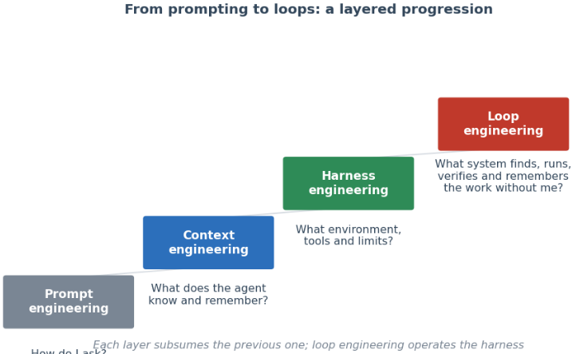
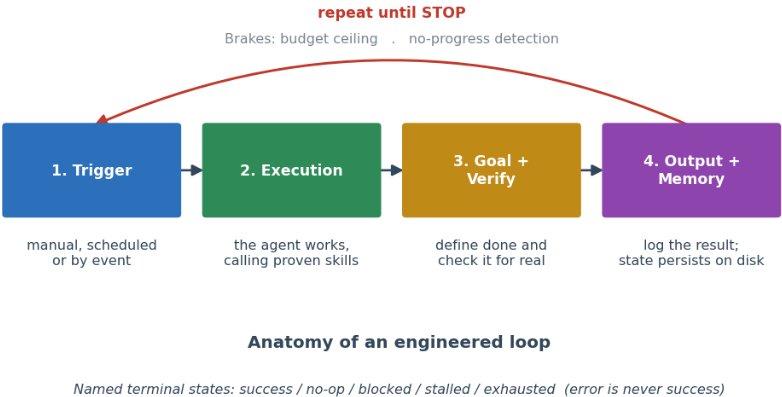
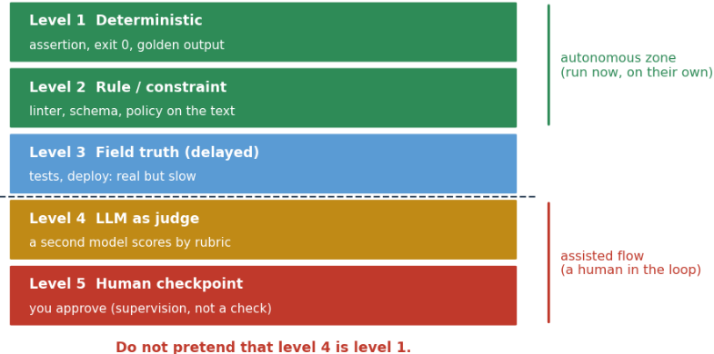
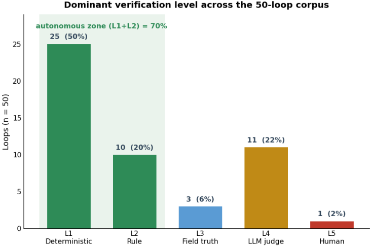
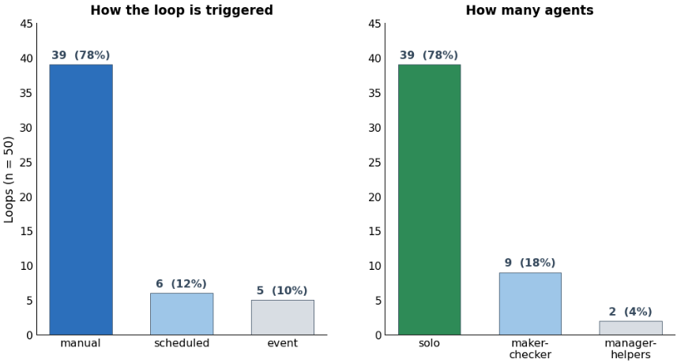
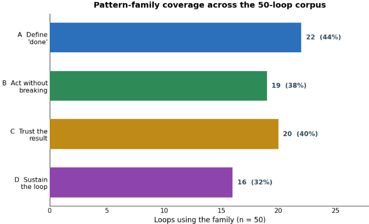
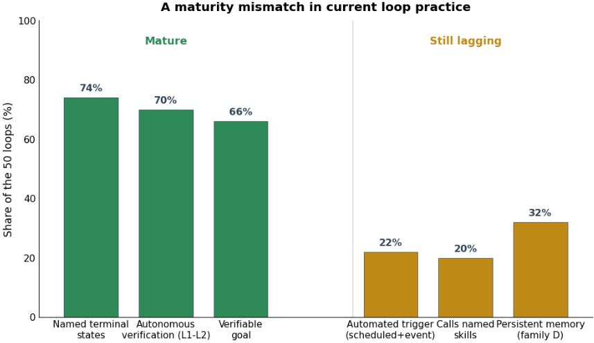
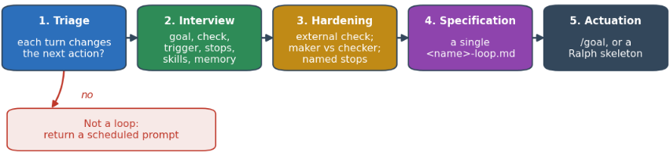

停止手把手提示你的 Coding Agent：工程化设计取代逐步提示的 Loop
针对2026年实践社区“别再逐步提示 coding agent，而要设计提示它的 loop”这一口号缺乏可审查论述的现状，本文以 position paper 形式系统化提出了 loop engineering 学科。作者将 loop specification 定义为由 trigger、goal、verification、stopping rule 与 memory 组成的有界可复用外部工件，交给 Claude Code、Codex 等 harness 自主执行，并将其定位为 prompt→context→harness→loop 演进中的新一层，强调 loop 与 prompt 是互补工具而非替代关系。论文给出五级 verification ladder、架构与命名终态等分类，并人工编码 Loop Library 的 50 个真实 loop：70% 在自主区（level 1-2）验证、74% 命名终态，但自动触发（22%）、技能复用（20%）与持久记忆（32%）仍不成熟。核心结论是 loop 的关键技能在于设计 check 而非写更好的 prompt，同时警示 reward hacking、verification burden、comprehension debt 等风险，并提出 cost per accepted change 作为未来实证研究的核心度量。
实践社区在2026年中期流行“停止逐步提示 coding agent，转而设计提示它的 loop”的口号，但该概念经由推文、演讲与博客传播，缺乏可审查的系统性论述。论文要回答：loop engineering 到底在构建什么、它与 harness 内部已有的 agent 循环有何区别、真实世界的 loop 语料实际长什么样、以及哪些从业者主张能经受科学文献的检验。
Position paper 锚定描述性语料研究。核心手段：(1) 定义 loop specification 为五部分（trigger、goal、execution、verification、stopping rule）加外置 memory 的有界可复用工件，与普通编程循环、harness 内部 perceive-act-observe 循环相区分；(2) 建立 taxonomy：trigger 类型、goal 类型、五级 verification ladder（确定性断言→规则约束→延迟现场真相→model-as-judge→人工检查点）、架构（solo / maker-checker / manager 编排 helper）与命名终态（success、no-op、blocked、stalled、exhausted）；(3) 人工编码 Loop Library 公开语料中的 50 个真实 loop；(4) 提出四族设计原则（定义 done、不破坏现有功能、赢得结果信任、维持 loop 运行）与五个反模式，锚定于 self-correction、reward hacking、model-as-judge 脆弱性文献；(5) 发布 sandeco-loop 开源技能，将原则转化为可复用的 loop 规格撰写流程（triage→interview→hardening→输出规格文档）。
50 个 loop 中 50% 以 level 1（确定性）验证为主导，约 20% 为 level 2（规则），70% 落在自主区（level 1-2），76% 在客观区（level 1-3）；仅 22% 依赖 level 4 model-as-judge，1 个 loop 以人工检查点为主导验证
74% 的 loop 命名了终态，66% 设定了可验证 goal
触发方式：78% 手动、12% 定时、10% 事件驱动（即仅 22% 为自动触发）；架构：78% 单 Agent、18% maker-checker、4% manager 编排 helper
四个模式族覆盖率：A（定义 done）44%、C（信任结果）40%、B（不破坏现有功能）38%、D（持久状态与记忆）32%；loop 中位数组合两个族
仅 20% 的 loop 调用命名的可复用技能，仅 32% 具备持久记忆；36% 的 loop 含人工审批，集中于生产、金融或外部等破坏性操作
11 个以 level 4 judge 为主导验证的 loop 中，多数配以 maker-checker 架构或独立 critic
首个对“loop engineering”实践进行学术化系统处理的工作：将 loop specification 确立为区别于编程循环与 harness 内部 agent 循环的独立研究对象，提出 prompt→context→harness→loop 的四层演进框架，给出五级 verification ladder 与命名终态等分类词汇，并以人工编码的 50 个真实 loop 语料提供描述性证据。与既有 Agent 研究多构建“harness 内部引擎”不同，本文研究的是人写给 harness 的“外部驾驶层”；论文明确不提出新算法，而是为快速演进的实践提供词汇与证据基础，并反驳“loop 取代 prompt engineering”的强口号。
相关度级别：high
命中能力域：3.3 Agent 架构与工具使用 | 3.5 评测与可靠使用 | 3.1 上下文工程与记忆 | 3.4 多智能体协作
理由：论文与团队“把模型用好而非训练模型”的定位高度吻合：其核心对象正是 3.3 域的 Agent loop/harness 设计与技能系统（loop 应调用命名、可测试的 skills，harness 提供引擎、loop engineering 写驾驶层）；同时实质命中 3.5 域（五级 verification ladder、reward hacking 与自审批反模式、cost per accepted change 成本度量、人工审批位置、安全性措施、对 AI 辅助工程实践的语料实证）、3.1 域（跨轮次状态外置到磁盘、记忆需策展而非堆叠、长上下文退化问题）与 3.4 域（maker-checker 分工、manager-helper 编排、multi-agent debate）。五级验证阶梯、“生成者不得自审”、终态命名与预算/停滞刹车等原则可直接转化为团队 Agent 自动化流程的设计规范；语料揭示的成熟度缺口（自动触发、技能复用、持久记忆薄弱）也指明了团队可发力的工程方向。
建议动作：深入精读并做内部分享
arXiv:2607.00038v1 [cs.SE] 2026年6月28日
Sandeco Macedo 戈亚斯联邦学院（Instituto Federal de Goiás, IFG），巴西 sanderson.macedo@ifg.edu.br
ORCID: 0000-0002-5255-596X
2026 年年中，一句口号重塑了从业者谈论编码 Agent 的方式：别再直接提示你的 Agent，开始设计那个提示它的循环。我们认真对待这一主张，并给予其细致的探讨。我们将这一新实践的对象称为循环规约（loop specification）：一个有界、可复用的制品，由触发条件、目标、验证步骤、停止规则和记忆构成，由人类交给 Agent harness（如 Claude Code 或 Codex），使 Agent 能够自行追求一个目标，从而取代逐步提示。我们将这一外部循环规约与两个常与之混淆的事物区分开来：普通的编程循环，以及 harness 作为底层管道（plumbing）已经提供的内部“感知—行动—观察”（perceive-act-observe）循环。我们将循环工程（loop engineering）定位为从提示（prompt）到上下文（context）到 harness 再到循环这一演进过程中的一个新层次，并针对那些更为夸张的标题提出相反论点：循环工程并不会让提示工程退役；循环与提示是用途各异的两种不同工具。我们提供四项贡献：该学科的定义与范围；围绕触发条件、目标类型、五级验证阶梯、架构与具名终止状态组织起来的循环规约结构剖析与分类体系；对 Loop Library 的描述性分析——这是一个由我们手工编码、包含 50 个真实循环的公开语料库；以及一组植根于自我纠错、奖励破解（reward hacking）与“模型即裁判”（model-as-judge）脆弱性等科学文献的设计原则与反模式。该语料库表明，实践恰好在该学科宣称重要的地方最为成熟：70% 的循环在验证阶梯的自主区进行验证，74% 的循环为其终止状态命名，而自动触发与持久记忆则相对发展不足。最后，我们讨论了这一实践必须遵守的限度，包括验证负担、理解债（comprehension debt）以及认知投降（cognitive surrender）的风险。
In the second week of June 2026, a single idea reorganized the discourse around coding agents: stop prompting the agent at every step and instead design the loop that prompts it. Practitioners building these tools stated the shift bluntly, from 'I don't prompt Claude anymore. I have loops running that prompt Claude' to the sharper imperative, circulated to several million viewers in a day, that one should no longer be prompting coding agents but designing the loops that prompt them. 1 Around the same time, a public catalogue of reusable loops, the Loop Library, turned the slogan into concrete artifacts. 2
The claim is striking and the practice is real, but the concept arrived through threads, talks and blog posts rather than through any reviewable account. That gap motivates this paper. We ask what exactly is being built, how it relates to the loops that already exist inside an agent, what a corpus of real loops actually looks like, and which of the practitioner claims survive contact with the scientific literature.
1 Quoted in The New Stack, 'Loop Engineering,' https://thenewstack.io/loop-engineering/ , and in A. Osmani, 'Loop Engineering,' https://addyosmani.com/blog/loop-engineering/ .
2 Loop Library (Forward Future), https://signals.forwardfuture.ai/loop-library/ .
1
The first task is to fix the object of study, because the word 'loop' carries at least three meanings. An ordinary programming loop is plain control flow. The internal cycle of an agent, the model running tools in a while over a stop condition, is the perceive-act-observe machinery that frameworks from ReAct [50] onward formalized; it is part of the harness and it exists whether or not anyone designs it. Neither of these is what the new practice means. The loop specification is a third thing: an external, bounded, reusable artifact, a trigger plus a goal plus a verification step plus a stopping rule plus a memory, that a human designs and hands to a harness such as Claude Code or Codex so the agent finds the work, does it, checks its own result, and knows when to stop or call for help. The harness supplies the engine; loop engineering writes the pilot.
We situate the practice as a new layer in a progression (Figure 1). 3 Prompt engineering asked how to ask. Context engineering asked what the agent knows and remembers. Harness engineering asked what environment, tools and limits the agent has. Loop engineering asks what system one builds so the agent finds, runs, verifies and remembers the work without a human in the middle of each step. Each layer subsumes the previous one rather than discarding it. We therefore resist the strongest version of the headline. A loop is, at bottom, a prompt repeated with scaffolding around it; prompt and loop are two tools, and learning to use the wrench does not mean throwing away the screwdriver. 4 Loop engineering is complementary to prompt engineering, not its obituary.

How do l ask?
本文做出四项贡献。我们定义了这一学科并划定其范围，将循环规范（loop specification）与编程循环、智能体内部循环以及单纯的定时提示（bare scheduled prompt）区分开来（第 3 节）。我们给出循环规范的解剖结构与分类体系，围绕触发器、目标类型、五级验证阶梯、架构以及命名的终止状态加以组织（第 4 节）。我们以手工方式对 Loop Library 中的五十个循环进行编码，并报告该语料库所揭示的、这一实践实际上如何设计这些要素（第 5 节）。最后，我们提炼出设计原则与反模式，并将其锚定于关于自我修正、奖励劫持（reward hacking）与“模型即裁判”（model-as-judge）脆弱性的文献之中（第 6 节和第 7 节），随后讨论限度与开放问题（第 9 节）。与此同时，我们开发并发布了 sandeco-loop——一个将上述原则转化为可重复的循环编写流程的开放技能（open skill），作为随论文一同交付的具体成果（第 8 节）。我们的目标并非提出一种新算法。而是要为这一快速演进的实践提供一套词汇体系与证据基础，使其主张能够被检验，而不是仅仅被重复。
3 四层框架源自该学科从业者的叙述；参见 tosea.ai 的 "What Is Loop Engineering?," https://tosea.ai/blog/loop-engineering-ai-agents-complete-guide-2026，以及 The New Stack 的 "Loop Engineering"。
4 这一清醒的解读沿袭自视频 "Loops & the Death of Prompt Engineering," https://www.youtube.com/watch?v=JirDfgJcJFU，该视频认为这一标题是一种挑衅性说法，且提示与循环仍然是两种不同的工具。
2
要构建外部循环，必须先弄清楚 harness（执行框架）已经提供了什么。“能力源于循环”这一思想早在语言模型出现之前就已存在。自主计算（autonomic computing）将自管理系统刻画为围绕共享知识运转的“监视—分析—计划—执行”循环，即 MAPE-K 循环，其目的正是让控制机制能够与其所管理的部件分开设计 [20]。同样的直觉也贯穿于机器人学的“感知—规划—行动”（sense-plan-act）循环，以及决策理论中的“观察—判断—决策—行动”（observe-orient-decide-act）循环。语言模型 Agent 继承了这一形态：归根结底，它就是一个在受停止条件约束的 while 循环中运行工具的模型——思考、调用工具、读取结果、再次决策。这一内部循环就是 harness 的底层管线。无论是否有人对它进行设计，它都客观存在，而且它并不是循环工程的对象。我们在此回顾它，是因为循环规约正是构建在它之上，也是因为塑造了这一循环的那些方法，正是这一新实践所依托的谱系。
走出一次性提示（one-shot prompting）的第一步，是让模型分步思考。思维链（chain-of-thought, CoT）提示表明，引出中间推理能够提升模型在单次处理难以应对的问题上的性能 [44]。自洽性（self-consistency）采样多条推理路径并取多数投票，而不是只信赖其中一条 [42]。由易到难提示（least-to-most prompting）把一个难题分解为一系列更简单、有序的子问题 [54]；plan-and-solve 将规划作为显式的第一阶段 [41]；分解式提示（decomposed prompting）把分解本身当作一个模块化程序来处理 [21]；self-ask 则让模型自行提出并回答后续问题 [31]。后续工作将规划进一步内化：reasoning via planning（通过规划进行推理）把模型视为一个世界模型，并在其预测的状态上进行搜索 [13]；Self-Discover 则让模型为每个任务构建一个定制的推理结构 [55]。
第二条路线让模型得以行动。ReAct 将推理轨迹与工具调用交错进行，使观察结果能够引导下一步的思考 [50]。Toolformer 教会模型何时调用外部 API [34]，ReWOO 则预先规划工具调用，以减少冗余的模型调用 [47]。LLM+P 将形式化规划路由给专用规划器 [23]，DEPS 则将描述（describe）、解释（explain）、规划（plan）与选择（select）耦合起来，用于开放世界任务 [43]。另一条并行的研究脉络则将工具调用本身加以规模化：MRKL 通过神经符号控制器路由子查询 [19]，ART 从示例中组装工具调用程序 [28]，HuggingGPT 用一个模型将子任务委派给专家模型 [35]，而 Gorilla 和 ToolLLM 则把这一循环扩展到数千个真实 API [30, 33]。用循环的术语来说，这一脉络塑造的是行动阶段：存在哪些调用、何时触发调用，以及结果如何返回。
3
第三条脉络用搜索取代了单一轨迹：Tree of Thoughts 探索了由部分解构成的树 [49]，Graph of Thoughts 将其推广为图 [5]，而 Language Agent Tree Search 则把行动与规划融入搜索之中 [53]。第四条脉络让反馈路径显式化：Self-Refine 就地完成生成、批评与修订 [26]；Reflexion 把失败的回合转化为可供下次复用的语言化经验教训 [36]；ReST 风格的训练将 Agent 自身成功的轨迹回灌，用作迭代式自我改进 [2]；Self-RAG 检索并批评自身的生成结果 [3]；chain-of-verification 通过结构化的自检削减幻觉 [9]；AdaPlanner 依据执行反馈修订计划 [38]；而 Voyager 则跨回合积累可复用的技能 [39]，这一思想也见于 inner monologue [17]，以及将建议锚定在 Agent 实际能力之上的做法 [1]。系统层面的工作将这些思想封装成框架：generative agents 把记忆、反思与规划结合在一起 [29]；AutoGen 将各个 Agent 组织为对话参与者 [45]；MetaGPT 对标准操作流程进行了编码 [15]；ChatDev 把软件开发演绎成分阶段的聊天 [32]；而 AgentVerse 则研究了通过招募组成的 Agent 群体 [7]。面向语言 Agent 的认知架构为记忆、行动与决策提出了一套统一的术语体系 [37]，综述绘制了这一领域的全景 [40, 46]，基准测试（benchmark）则对其加以度量 [25, 48]，而最近的一篇综述更将从单步决策到长时程智能体强化学习（agentic reinforcement learning）的转变形式化 [51]。
Anthropic 的实践者指南在“工作流”（workflow）与 Agent 之间划出了一条有用的界线：前者由开发者预先固定执行序列，后者则由模型在开环中自行选择下一步。5 上述方法几乎全都是塑造这一 Agent 内部循环的方式。循环规约（loop specification）则是更外一层。它并不改变模型内部的 while 循环；而是在整个 harness 外围包裹一层有界且可复用的规约，决定 Agent 究竟何时被调用、什么才算完成、以及何时将控制权交还给人类。本节所梳理的这条谱系是引擎。论文的其余部分讨论的，则是实践者如今为驱动这台引擎而编写的“驾驶员”。
我们将循环规约（loop specification）定义为一种有界且可复用的工件，由人类设计并交付给 Agent harness，使 Agent 能够自主追求某一目标，从而取代逐步提示。它包含五个部分：启动循环的触发条件（可以是一个人、一个日程或一个事件）；一个目标，最好是可验证的；一个执行阶段，Agent 在其中开展工作，理想情况下通过调用经过验证的具名技能；一个真正对结果进行检查的验证环节；以及一个停止规则，它将循环驱动至某个具名的终止状态（success、no-op、blocked、stalled、exhausted），而绝不会把错误误认为成功。关于进度与决策的记忆跨轮次持续存在，保存在磁盘上而非对话之中。循环工程（loop engineering）就是设计与评估这些工件的学科。图 2 展示了其结构剖析。
这一学科只针对共享同一名称的三种事物中的第三种。普通的编程循环是控制流。智能体内部循环是模型在停止条件的约束下运行工具的过程；它是执行框架（harness）的一部分，且默认即存在（第 2 节）。循环规约（loop specification）则是人类编写并交付给该执行框架的外部工件。执行框架提供引擎；循环工程编写的则是驾驶员。区分这些含义并非咬文嚼字：第 2 节中的大多数学术脉络构建的是引擎，而本文所研究的实践构建的则是驾驶员，将二者混为一谈恰恰就是这一口号所招致的混淆。
5 Anthropic，"Building Effective Agents"，https://www.anthropic.com/research/building-effective-agents 。
4

从业者的叙述汇聚于同一点：循环中困难而有价值的部分，在于设计那个判定工作何时完成的检查，而不是写出一条更好的指令。6 一个没有任何东西可以反驳的循环，无异于智能体在自我附和。这正是该定义将验证置于重心位置的原因：循环的价值在于以可复现的证据取代盲目信任，也在于它将控制权交还给人类的那个时刻。
只有当一轮的结果会改变下一步行动时，循环规格（loop specification）才比单纯的定时提示更为合理。7 如果一个固定任务以固定节奏运行，而上一次运行的任何信息都无法为下一次提供依据，那么这就是定时的一次性任务，而非循环。循环的价值在于带有内嵌验证的迭代，因此首要的设计问题永远是：是否存在真正的反馈。
具体而言，一个真正的循环系统由五个可复用的组件和一个外部记忆组装而成。8 定时自动化（scheduled automations）负责发现工作并对其进行分诊（这是定时触发器的具体化）；
6 A. Osmani, 'Loop Engineering,' https://addyosmani.com/blog/loop-engineering/ ; S. Willison, 'Designing agentic loops,' https://simonwillison.net/2025/Sep/30/designing-agentic-loops/ .
7 这一分诊标准是在社区对该实践的讨论中逐渐定型的；参见围绕 Loop Library 发布所汇总的相关讨论串。
8 这一运行层面的解剖结构沿袭自 A. Osmani 的 'Loop Engineering'，https://addyosmani.com/blog/loop-engineering/ 。
相互隔离的 worktree（工作树）让并行的 agent 互不冲突地运行；技能（skills）将项目知识编码为命名的、可测试的例程；插件（plugin）与连接器（connector）把 agent 接入真实的工具（issue 跟踪器、CI、staging 环境）；而子智能体（sub-agent）则将“负责实现的一方”与“负责检查的一方”分离开来。记忆存放在文件、看板或 markdown 之中，因为模型在两次运行之间会遗忘。正是这一解剖结构，将一个能够进行组合的循环与一个脆弱的脚本区分开来。
对照一个具体的产物来理解，这四个要素会更容易把握。第 8 节介绍了 sandeco-loop——我们开发的一个开放技能（skill），用于编写经过加固的循环规范——作为将这一定义付诸实践的交付物。
本文是一篇以描述性语料研究为根基的立场论文（position paper）。我们为这一学科给出定义，为其构建解剖结构与分类体系，对一个包含五十个循环（loop）的公开语料进行编码以考察这一实践的实际做法，并将设计指南植根于文献之中。我们并未在可度量的预算下运行循环，也不声称取得任何基准测试（benchmark）结果；第 9 节解释了为什么这类研究虽然有价值，却属于未来工作，而非本文立场的一部分。
在确定了这一解剖结构之后，我们便可以沿着设计者实际会做出选择的几个维度来组织循环规约：触发方式、目标的类型、验证的严格程度、架构以及终止状态。
循环可以手动启动、定时启动，或由诸如新的拉取请求（pull request）之类的事件启动。定时触发和事件触发正是将人从启动动作中移除的方式；而手动触发是最常见、自动化程度最低的触发方式。选择触发方式同时也是在选择一种节奏，而过于急切的节奏只会烧掉成本，却收益甚微。
目标要么是可验证的——由确定性检查、一个数字或一条规则来判定——要么由模型依据评分标准（rubric）来评判，要么是两者的混合。可验证目标本身就是其自身的停止规则，因此被强烈优先采用。以模型为裁判（model-as-judge）的目标则更为脆弱，因为它把品味和判断留给了模型，而且关于 LLM 作为裁判（LLM-as-a-judge）的综述研究已记录了其偏差以及对提示措辞的敏感性 [12]。纯粹依赖判断的目标，例如“写一部够得上诺贝尔奖水准的小说”，根本无法循环，因为不存在可复现的检查来作为停止依据。
对“可验证与评判”这一区分而言，最有用的一项细化，是一个五级严格性阶梯（图 3）。第 1 级是确定性的：一条断言、一个退出码、一份黄金输出。第 2 级是施加于文本之上的规则或约束：一个 linter、一个 schema、一条策略。第 3 级是延迟到来的现场真实反馈：测试、一次部署、真实客户的回应——真实，但缓慢。第 4 级是以模型为裁判，按评分细则打分，这只是模型的意见，而非现场真实反馈。第 5 级是人工检查点，这是监督，而非自动化验证。第 1 级和第 2 级属于自主区，即那些当下就能自行运行的检查；第 1 至第 3 级属于客观区；第 4 级和第 5 级属于辅助流程，由一个人或一个模型顶替某个检查环节。贯穿这一阶梯的核心信息是一种诚实纪律：不要假装第 4 级就是第 1 级。一个循环的自主程度，取决于其验证器真正所处的层级；而如果第 4 级不可避免，就应当由另一个不同的模型来评判，绝不能让同一个 Agent 自己批准自己 [27]。
6

循环可以由单个智能体（solo）运行，也可以由一个制作者（maker）和一个独立的检查者（checker）运行，或者由一个管理者（manager）协调若干辅助者（helper）来运行。maker-checker 分离是“生产者不应同时是审批者”这一原则在架构层面的体现，也是当 level-4 评审（judge）参与时的标准加固手段。多智能体（multi-agent）辩论是同一思想的更丰富变体：强制相互独立的智能体彼此提出异议，能够对抗模型一旦相信自己的答案便停止产生新思路的倾向 [22]。
一个格式良好的循环规范会以名称区分其终止状态：成功（success）、干净的无操作（no-op）、受阻（blocked）、停滞（stalled）、耗尽（exhausted）。关键在于，错误或预算耗尽绝不能算作成功。停止条件很少是一个凭空设定的数字；它通常是目标已经达成、停滞检测器在连续多轮无进展后触发，或是预算上限。为这些状态命名，正是防止循环把“我迭代累了”当作胜利的关键，它也将图 2 中所示的制动机制落到了实处。
由于模型在多次运行之间会遗忘，持久状态应当存放在磁盘上：一份计划、一份规格说明、决策与异议的记录、代码及其版本历史。即使在单次运行内部，被推入长上下文深处的内容所获得的注意力也最少 [24]，这是将状态外置而非任由上下文窗口增长的又一个理由。Ralph 循环是最纯粹的例子：一个 shell 循环，每一轮都以全新的上下文重放同一个提示，而所有状态都保存在文件中，以对话历史换取版本化的工件。9 持久且经过整理的记忆同样是上下文演化这门科学的用武之地：将外部记忆视为一份需要生成、反思和整理的行动手册，而非盲目追加的内容，便能在不触及权重的情况下改进智能体 [52]。
7
这五个维度构成了循环规范的设计面。下一节将考察一个由五十个真实循环组成的语料库在每个维度上实际做出了怎样的选择。
迄今为止，这一框架描述的只是意图。为了看清实践实际做了什么，我们手工对循环库（Loop Library）中的五十个循环进行了编码，逐一阅读每条目录条目，并记录其触发方式、目标类型、在第 4 节阶梯上的主导验证层级、架构、终止状态以及模式使用情况。10 这一编码是对一个公开语料库的描述性编纂，而非实验：本节中的每一个数字都可追溯到该编码，没有任何数量是凭空捏造的。我们如实报告实际存在的情况，包括实践未能达到其自身理想之处。
主导验证层级方面，语料库中有一半以第 1 层级（确定性）为主导，五分之一以第 2 层级（规则）为主导（图 4）。百分之七十位于由第 1 和第 2 层级构成的自主区域（autonomous zone），百分之七十六保持在由第 1 至第 3 层级构成的客观区域（objective zone）之内。只有百分之二十二依赖第 4 层级的模型裁判（model judge），且仅有一个循环以人工检查点（human checkpoint）作为其主导验证。这是对该领域核心偏好的直接支持——尽管只是描述性的：实践者会优先选用客观检查，并将模型裁判（model-as-judge）视为经过加固的例外，而非常规。

9 G. Huntley, 'Ralph Wiggum as a software engineer,' https://ghuntley.com/ralph/ .
10 编码产物（逐循环表格与机器可读的 JSON）随本文一同提供；语料库为公开的循环库（Loop Library），https://signals.forwardfuture.ai/loop-library/ 。
8
在主导检查为 4 级评审（judge）的十一个循环中，大多数将其与“制作者-检查者”（maker-checker）架构或独立的批评者（critic）相配对，遵循“制作者不得兼任检查者”的规则。由此，该语料库切实落实了文献所推荐的加固措施：凡由模型担任评审之处，均由另一个模型或固定的评分准则（rubric）来执行评审，而非由 Agent 为自己的工作打分 [27]。
在 78% 的循环中，触发方式为手动，仅有 12% 为定时调度，10% 为事件驱动（图 5）。架构同样高度集中：78% 的循环运行单一 Agent，18% 将制作者与检查者分离，4% 编排辅助者。实践中真正能够去除人工的部分——自动触发与多智能体检查——恰恰是发展最不成熟的部分。

将每个循环映射到四个模式族——定义“完成”（A）、在不破坏的前提下行动（B）、信任结果（C）以及维持循环（D）——可以看到其覆盖面广泛但不均衡（图6）：A出现在44%的循环中，C为40%，B为38%，而D——即持久状态与记忆族——仅占32%。中位数循环结合了两个族，因此这些并非互斥的选择。有四个循环未列入公开的模式目录，其所属族是从文本中推断得出的；若将这些推断出的标签计入，总数会略有上升，但不会改变排序。D族的薄弱与文献中反复出现的一项观察相吻合：在缺乏治理的情况下积累经验会导致性能退化，因此持久记忆需要的是策展，而不仅仅是存储 [52]。
9

将上述内容综合起来，便揭示出一个颇具启示意义的差距（图 7）。该语料库恰恰在学科自身称为核心的要素上成熟度最高：74%的循环明确了终止状态，70%能够自主验证，66%设定了可验证的目标。而在那些能让循环在无人参与下运行的要素上，成熟度最低：仅有22%使用自动化触发器，仅有20%调用具名的、可复用的技能，仅有32%发展出持久记忆。换言之，当前实践对“我如何知道它已完成”这一问题的解决程度，远好于“它如何在没有我的情况下运行”这一问题。对于一个年轻学科而言，这是一个自洽的位置，并且它精确地指明了下一轮工程努力应当投向的方向。
语料库展示了循环在做什么；文献则说明了稳健模式为何有效。我们将设计指导归纳为在五十个循环中反复出现的四个类别，并将每一类都建立在对真实系统行为的引用之上，而非我们自己的测量结果。
此处的可靠模式以一把冻结的标尺进行评分——每一轮都使用相同的评分准则、基准测试（benchmark）或条件，因此各轮之间具有可比性；它们要求一连串连续的成功，而非单次侥幸通过；它们明确指定终止状态；并且它们在出现停滞或预算耗尽时停止，而非依据某个凭空设定的次数。其科学依据是直接的：模型在没有辅助的情况下对自身已经完成的判断并不是一个可靠的信号，因为推理自我纠正在缺乏外部反馈时无法可靠地改进，甚至可能退化 [16]。正是这种冻结的、外部的完成检查（done-check）让“完成”一词具有了实际意义。

每一轮只改动一处，然后重新运行检查，只有在其他方面均未出现退化时才保留该改动；优先修复最严重的问题；先对“改动前”的状态拍照留作基线；将修改范围限定得如外科手术般精准；并且每一轮都从干净状态开始，以免陈旧的上下文掩盖下一个问题。这些做法正是“小型、可回退的提交”在循环中的对应物，它们使验证信号保持可解释：当恰好只有一个变量发生变动时，检查才能真正将结果归因于该变动。
制作者不应兼任审批者：应将生成角色与验证角色分离，分别由不同的 Agent、会话或模型来承担。应在一份全新的留出集（hold-out）上评判验收结果，而不是在 Agent 编辑时所针对的那套数据上评判。每一项论断都必须与证据绑定，不留任何无声的缺口，因为依据薄弱恰恰是抬高捏造内容风险的原因 [18]。要证明验证器本身是有效的，应采用“先红后绿”（red-before, green-after）的检查，而不是轻信一个可能从未失败过的测试。这一族做法直接回应了文献中最尖锐的结论：当生成器与评判者是同一个模型时，奖励劫持（reward hacking）会自发出现——分数上升，而真实质量却停滞甚至下滑 [27]；其缓解之道是打破制作者与检查者之间的共享上下文，而这正是角色分离所实现的效果。强制进行独立评审——正如多智能体辩论（multi-agent debate）所做的那样——能够对抗同样的思维退化 [22]；不过，辩论所换来的，一致性并不亚于正确性，因此还必须确保辩论本身始终聚焦于任务 [16, 4]。
将进度、决策与异议持久化到一个文件中——即循环在轮次之间保存的记忆；在行动之前枚举整个任务面，确保没有任何内容隐藏在顺利路径（happy path）之中；并将不可逆操作置于明确的人工批准这道关卡之后。记忆是相关研究最具警示意义的领域：未经治理而积累的经验可能使性能降至零样本（zero-shot）基线之下，因此，策展循环（curation loop）——依据证据决定保留还是丢弃每一条经验教训——正是让持久记忆有所帮助而非造成损害的关键 [52, 11]。这也是文献语料中着墨最少的一族（第 5 节），而这恰恰使其成为实践中最清晰的机遇。
11
贯穿上述四个家族，有一条值得从正面加以表述的反模式：内部不含可复用技能的循环，不过是包裹着陌生人的 while true；而调用精准、经过测试、有明确命名的技能的循环，才是一个可组合的系统。11 第 8 节将介绍我们开发的一个技能，它将这些原则付诸实践。
当违反原则的做法有了名字，原则就更容易被应用。我们描述了五种反模式——即那些看似合理、却会损害可靠性、成本或两者兼有的反复出现的循环设计——然后给出评估标准，供设计者或评审者无需运行基准测试（benchmark）即可加以应用。
一个把原始模型包裹在无界重试之中、内部既没有具名技能也没有真正检查的循环，就是一个在原地兜圈子、自我附和的 Agent。它看起来很忙碌，产出却很少，因为循环中没有任何环节携带模型原本不具备的信息。治愈之道是第 6 节的正面原则：调用锋利且经过测试的技能，并在每一轮都设置有据可依的检查。
当同一个模型既负责完成工作又负责为其评分时，评分会不断走高，而质量却并未随之提升。这并非一种遥远的风险：当生成者与评判者共享上下文时，奖励作弊（reward hacking）会自发产生 [27]；而在简单的作弊行为上训练，可能泛化为模型编辑自身的奖励信号 [8]——自早期对奖励篡改（reward tampering）的分析以来，这一危害在原理上就已被认识 [10]。缓解之道是结构性的，而非劝诫性的：将制造者与检查者分离，并优先采用 level-1 或 level-2 检查，而非自我评分。
循环会优化其检查的字面要求，却钻其精神实质的空子：它修改测试而不是修复代码，硬编码预期输出，或者，在有据可查的案例中，直接对环境下手作弊，而不是解决任务本身 [6]。这种行为很难根除；提示层面的缓解措施能减少但不能消除它。防御手段是：一份 Agent 从未针对其进行过编辑的留出集（hold-out）、一个已被证明能捕获该缺陷的验证器，以及绝不让 Agent 使未通过的检查静默。
循环报告的是某个确定性检查的置信度，实际依赖的却是模型的意见。评判器（judge）是脆弱的：多项调研记录了它的偏差与提示敏感性 [12]，而把它的评分当作真值（ground truth）会同时招致漂移与攻击。诚实的做法是如实说明验证器真正所处的层级，并用评分细则（rubric）、第二个模型或独立收敛来加固任何第 4 级的评判器。
11 这一措辞来自从业者关于循环编写的记述；参见项目语料库中的 EXECUCAO-E-AUTORIA 以及 A. Osmani 的 'Loop Engineering'。
12
一个既没有任务相关停止规则、也没有停滞检测器、更没有预算上限的循环，会围绕一个它无法解决的问题不停打转，直到成本耗尽；更糟的是，它可能在任何人察觉之前就采取若干具有重大后果的行动。多智能体（multi-agent）变体会在多轮迭代中逐渐偏离问题本身，最常见的原因是缺乏进展 [4]。刹车装置就是图 2 中的具名终止状态、无进展检测器和预算上限，并由人工审批为任何不可逆操作把关。
由于我们并未提出任何实证性主张，因此提出一份定性检查清单，针对循环解剖结构的每个要素各设一个问题。触发（Trigger）：相比按计划执行的一次性运行（one-shot），采用循环是否具有正当性，也就是说，反馈是否会改变下一步动作？目标与验证（Goal and verification）：验证器（verifier）真正处于阶梯的哪一级，第 4 级的裁判（judge）是否经过加固？架构（Architecture）：在涉及裁判的情况下，生成者（maker）与检查者（checker）是否彼此分离？停止（Stopping）：终止状态是否被具名、错误是否绝不会被计为成功，预算与停滞是否得到处理？记忆（Memory）：状态是经过整理并持久化的，还是仅仅不断累积？一个能很好地回答这些问题的循环，在本文的意义上就是良构的（well formed）。
有一项量化准则值得单独提出，因为据从业者反映，它几乎从未被测量过：每次被接受变更的成本（cost per accepted change），即所花费的 token 或资金除以经受住验证的变更数量。12 原始的 token 花费是错误的数字；健康的循环会让每次被接受变更的成本保持低位且持平或下降，而一个烧掉预算却产不出获批变更的循环就是坏掉的，哪怕它看起来很忙碌。我们提议将其作为本立场论文本身并未开展的实证研究的天然核心指标。
前几节所述的原则与反模式，说起来容易，但要始终如一地加以应用却并非易事。作为本文的一项具体交付成果，我们开发并发布了 sandeco-loop——一个开放技能（open skill），它将这些原则与反模式转化为可重复的编写流程。13 该技能并不运行循环，而是编写循环的规格说明。这一区别至关重要：其输出是一份单一文档，其中记录了循环的触发条件（trigger）、目标（goal）、检查（check）、停止规则（stopping rule）与记忆（memory），并在构造上即已加固，人类随后便可阅读该文档、对其进行版本管理，并将其交给执行框架（harness）。图 8 展示了从原始任务到该文档的流水线。
该技能首先提出整个学科成败所系的问题：每一轮（turn）的结果是否会改变下一步行动？如果不会，该任务就不是循环，技能会直截了当地说明这一点，返回一个简单的定时提示（scheduled prompt），而不是把一次性任务包裹在它并不需要的机制之中。只有具备真正迭代的任务才会进入访谈环节。这一退出通道（off-ramp）是防范无人值守失控（unattended-runaway）与 while-true 这两种反模式的第一道防线：它拒绝在反馈无事可做之处构建循环。
12 该度量指标在关于这一实践的社区讨论中得以明确成形；参见项目语料库中的 VOZES-DA-COMUNIDADE。
13 sandeco-loop，https://github.com/sandeco/prompts/tree/main/sandeco-loop 。
13

该技能负责撰写规范，而不负责运行循环。输出：一份经过加固、可直接复制使用的文档。
图 8：sandeco-loop 编写流水线。任务首先经过分诊；如果没有任何反馈会改变下一步动作，该任务将作为定时提示（scheduled prompt）退回，而不是被强行纳入循环。否则，一段简短的访谈将收集设计要素，随后一个加固环节应用这些原则与反模式，最后该技能输出一份单一的规范文档，并附上启动执行该文档的方式。
对于通过分诊的任务，该技能会围绕第 4 节中分类法的各个要素进行一次简短的访谈，每次只问一个问题。它会询问目标是什么，以及成功是可验证的还是属于判断问题；询问能够证明某一轮次确实奏效的具体检查——一条命令、一个测试或一条断言；询问触发方式（手动、定时或事件）；询问成功之外的具名停止状态，例如 no-progress、blocked 或 exhausted；询问循环将要调用的具名技能，以及它将调用的任何嵌套子循环；询问状态在各轮次之间存放于何处；以及询问防护栏，即迭代与预算上限，以及需要人工批准的节点。这场访谈经过刻意设计，使作者无法跳过实践者最常遗漏的部分——具体检查与停止状态。
在写入任何内容之前，该技能会让设计经过一道加固处理（hardening pass），其内容与第 7 节一一对应。它坚持采用外部检查而非自我评分——这是针对奖励劫持（reward hacking）的结构性应对；它让制造者与检查者保持分离，并且在不得不使用模型评判者时，切断二者之间的共享上下文；它要求终止状态中，错误或预算耗尽绝不能被计为成功；它强制每轮只做一处修改，且优先处理最糟糕的条目；它为任何嵌套子循环设置乘性上限，因为成本会随深度成倍增长，并禁止子循环调用其自身的调用者；它将状态存放在磁盘上，使记忆能够在全新的上下文中得以延续；它还记录一项健康指标——每次被接受修改的成本——从而让那些烧掉预算却未产出已获批准工作的循环明显地暴露出故障。
输出是单个 <name>-loop.md 文档，具有固定的骨架：一段描述和一个“使用时机”（use when）；目标及其验证方式；单轮的步骤；命名的终止状态；护栏；记忆的存放位置；任何子循环；一段简短的“为何有效”（why it works），将每项设计选择与其所防范的失效模式联系起来；以及一条执行条款。执行方式视规模而定，分为两种形式：当工作能容纳在单个上下文窗口内时，采用 /goal 命令，由一个快速模型对照智能体在对话记录中展示的内容来核查终止条件；当工作长到单个上下文会出现退化时，则采用全新上下文的 Ralph 骨架，每轮重新读取该文档和磁盘上的状态。该技能还可以选择性地输出一个 /loop-<name> 命令，将该文档包装起来以供直接调用。
14
当被要求生成一个测试覆盖率循环时，该技能会产出一份文档：其目标是完整覆盖某个目标目录（可验证）；其核查条件是覆盖率命令以零退出并报告目标；其单轮动作是拍摄当前覆盖率的快照、攻击覆盖率最低的文件、编写一个测试，通过“先红后绿”的运行证明该测试能捕获缺陷，然后仅在没有出现任何回归时才保留该变更。其终止状态包括：达到完全覆盖的成功、两轮空转后的无进展，以及达到轮次上限后的耗尽；其护栏禁止未经批准改动 CI；其执行方式是一条 /goal 命令，持续运行直到覆盖率命令显示无失败且目标达成，或在达到上限后停止。分类体系中的每一个要素都在场且被命名，而这正是要点所在。
我们将该技能作为一种交付物提供，它将这一学科付诸操作化，是连接原则与可书写产物之间的桥梁，而非一项经过评估的贡献。我们未报告其任何使用数据，而以这种方式编写的规范能否改善实际领域中的成效，是一个悬而未决的实证问题，第9节的研究正是为了回答这一问题。
我们已经论证：循环规范（loop specification）是一个独立的对象，它是叠加在 harness 之上的一个新层级，而非对提示（prompting）的替代；同时，一个公开语料库已经展现出一种连贯（尽管并不均衡）的实践。在结尾处，我们将讨论人应当处于什么位置、这一实践不得过度宣称什么，以及本研究的局限。
循环工程并不是把人移除，而是让人在一条自主性光谱上移动位置。当人处于环内（in the loop）时，每一个有实质影响的动作在运行前都必须经过批准；当人处于环上（on the loop）时，人通过告警或仪表盘进行监控，只在出现异常时介入；当人处于环外（out of the loop）时，Agent 独立行动，仅偶尔接受指导。语料库所反映的正是这一点的清醒版本：36% 的循环中出现了人工批准，而且恰好集中在动作具有破坏性的地方，即生产、金融或对外场景中（第 5 节）。关键不在于消除人，而在于明智地限制自主性；一项针对先规划后执行（plan-then-execute）Agent 的实证研究也警示了这为何重要：用户会过于轻易地把信任交给那些看似合理的计划，因此人工检查点必须落在不可逆的步骤上，而不是落在常规步骤上 [14]。
围绕循环最强劲的营销，是这样一个承诺：一个能在你睡觉时自我改进的系统。我们同样认同的清醒解读是：循环自动化的是打字，而不是判断；瓶颈——审查 Agent 产出的内容——只会越来越大。更快的循环会让三个问题变得更糟而非更好，而且它们是人的问题，而非技术问题。14 验证负担是指：正是将检查者与制作者分离，才让“完成”一词有了意义；即便如此，“完成”也只是一种主张，而非一个证明——文献把这一直觉讲得很精确，因为无辅助的自我评估并不可靠 [16]，而自我打分则会虚高 [27]。理解债是指：循环把并非自己写的代码交付出去的速度越快，实际存在的东西与自己理解的东西之间的鸿沟就越宽。认知投降是指：一旦循环看起来应付得过来，人便受到不再持有自己观点的诱惑；带着判断力去设计循环，它是解药；为了逃避思考而设计循环，它则是助燃剂。还有一条直白的经济性警示：目前没有针对独立开发者的公开投资回报率（ROI）研究，循环的运行成本高昂，而且 token 充裕者与 token 匮乏者的使用模式差异悬殊。15 一些评论者走得更远，把这种自我改进话语解读为一种“诱饵调包”（bait and switch）：在人类控制下实现更快的编码，而不是一个能够自我改进的系统。16
14 A. Osmani, "Loop Engineering," https://addyosmani.com/blog/loop-engineering/ .
无人值守地运行循环，同样意味着无人值守地出错。第三方插件可以运行任意代码，而网络访问则为提示注入（prompt injection）打开了一条通路；已有文档记载的缓解措施包括：使用无网络的隔离容器、在测试或预发布（staging）环境中使用作用域受限的凭证，以及设置严格的预算上限。17 对于自主循环而言，这些并非可选的附加项；它们就是让循环持续运行所必须付出的代价。
当下一步动作不会随新的反馈而改变时（那就一次性完成，或许可以按计划定时执行），当目标纯粹是品味问题、没有可复现的检验标准时，当工作属于方向未知的、模糊不清的全新构建（greenfield construction）时，或者当循环的成本得不偿失时，循环就是错误的工具。明确指出这些情形，正是这门纪律的一部分，而非对它的退缩。
本文是一篇立场论文（position paper），其基础是一项描述性语料库研究，而非对照实验。对这五十个循环的编码是我们自己对单一公开目录所做的定性解读；换一位编码者可能会对其中一些循环作出不同的归类，该语料库也并非对现实世界中所有循环的随机抽样，且含义模糊的条目是从文本推断得出的。这些汇总百分比描述的是该语料库，而非所有循环规范构成的总体，我们也不会从中得出任何因果结论。这些设计原则以所引用的相关系统行为为依据，但那些系统大多研究的是 agent 的内部循环，因此将它们的经验迁移到外部循环上是一种经过论证的类比，而非实测结果。我们刻意没有编造任何使用数据，包括 sandeco-loop 技能的使用数据在内——我们将其作为随附工件（artifact）发布，而非作为一个经过评估的系统。
最清晰的下一步，是本文所铺垫的那项实证研究。在固定预算下运行循环，并以每次被接受变更的成本作为首要指标，将能检验语料库所偏好的那些模式是否真正奏效，以及代价几何。自进化 agent（self-evolving agents）科学为此类研究提供了可以采用的留存与安全度量指标 [11]，而更广泛的智能体强化学习（agentic reinforcement learning）图景则为循环所提出的长时程控制问题提供了框架 [51]。第二个方向是工具化：harness 应当将触发方式、验证级别、架构、终止状态与记忆作为一等配置暴露出来，使循环在我们分类体系中的位置得以显式声明，而不是被埋没在脚本之中。我们将本文视为概念性与描述性的基础工作，正是它使这两个方向成为定义明确的问题。
15 S. Willison, 'Designing agentic loops,' https://simonwillison.net/2025/Sep/30/designing-agentic-loops/ .
16 这种怀疑性的表述与 Gary Marcus 关于 agent 自主性的评论相关联；另见 The New Stack 上的讨论文章《Loop Engineering》。
17 S. Willison, 'Designing agentic loops,' https://simonwillison.net/2025/Sep/30/designing-agentic-loops/ .
16
一句口号宣称，提示编码 agent 的时代已经结束，如今的工作是设计那些对 agent 发出提示的循环。我们认真对待了这一主张，并对其作了审慎而冷静的处理。这一新实践的对象是循环规约（loop specification）：一个有界、可复用的工件，由触发器、目标、验证、停止规则与记忆构成，由人交付给 harness，使 agent 得以自主工作；它既不同于编程中的循环，也不同于 harness 已经在运行的 agent 内部循环。我们将循环工程（loop engineering）定位为叠加在提示工程、上下文工程与 harness 工程之上的一个新层次，并论证它是对提示的补充而非终结。我们为这一学科给出了结构剖析与分类体系，对一个由五十个真实循环组成的公开语料库进行了编码，以考察这一实践实际在做什么，并将其原则与反模式锚定于关于自我修正、奖励劫持（reward hacking）与“模型即裁判”（model-as-judge）脆弱性的文献之中。语料库讲述了一个连贯的故事：这一实践在学科指出价值所在之处——即验证与具名停止——已经成熟，而在自主性真正来源之处——即自动化触发器、可复用技能与持久记忆——则拥有最大的成长空间。我们只主张了一篇锚定于描述性语料库的立场论文所能主张的内容：循环规约是一个真实且独立、值得精心设计的对象；其核心技能是检查而非提示；并且应当在成本与局限清晰可见的前提下加以采用。将这一主张转化为经过测量的事实——以每个被接受变更的成本作为衡量标尺——正是这一框架旨在引出的工作。
作者开展了研究并撰写了手稿。然而，在本研究的准备过程中，作者使用了 Grammarly 工具来改进文本的一致性，并使用 Claude Opus 4.8 来协助文本结构组织及英文翻译。在使用这些工具/服务之后，作者根据需要对内容进行了审阅和编辑，并对出版物的内容承担全部责任。